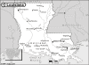

Louisiana

Attention: If you use this or any of the AIRS lists in any state, please report any bad phone numbers or emails to the webmaster. This is the responsibility of all users, including you. Thank you!
Rick
(rmcguirt@cox-internet.com)
CROSSROADS:I-10 and I-210 loop
Lake Charles, 70605
BUSES:1971 7 passanger bus
COMMENTS:
Beware I am not much of a mechanic, but I can tell you where they are.
AVAILABLE:8am to 9pm most days
familiar with:1600
I CAN PROVIDE THE FOLLOWING SERVICES:
INTERNET ACCESS
TELEPHONE ACCESS
COFFEE/TALK
TRANSPORTATION HELP
Pat
Carsavior_at_MSN_dot_com
CROSSROADS: I-20 and 165
PHONE: 318-387-6355
Monroe, 71201
VW'S: 67 Beetle
COMMENTS: No pro, but my first ride was a VW, and I've been
coaxing them along ever since.
AVAILABLE: I work shift work, so try your luck.
familiar with: 1500, 1600, 1776+
I CAN PROVIDE THE FOLLOWING SERVICES:
INTERNET ACCESS
TOOLS
TELEPHONE ACCESS
TRANSPORTATION HELP
MECHANICAL HELP
SPACE TO WORK ON BUS
STORAGE SPACE
COFFEE/TALK
CAMPING SPOT: 4 nights or more
SPARE ROOM: 4 nights or more
Favorite beer type: Anything cold
Bruce W.
(bwiley3@bellsouth.net)
CROSSROADS: US Hwy 84 West
Ferriday, 71334
VW'S: 1967 Westy
COMMENTS:
I work 8-5 Mon-Fri, but weekends find me working on my '67 Westy. I have never driven a
bus. I have been working on it since June 99. I am no mechanic or parts house, but I will
do what I can to help. I do make really good coffee.
AVAILABLE: MON-FRI Between 5p and 7:30a, WEEKENDS
I CAN PROVIDE THE FOLLOWING SERVICES:
INTERNET ACCESS
TOOLS
TELEPHONE ACCESS
TRANSPORTATION HELP
SPACE TO WORK ON BUS
COFFEE/TALK
CAMPING SPOT
bradley scott white
(bossman1@bellsouth.net)
CROSSROADS: perkins road
baton rouge, 70808
PHONE: mail me first
VW'S: you got it i will fix it i buy no parts but will be cool on the labor
COMMENTS: I work at the local vw dealer and have for the past nine years off and on where
in that time i have gone from vw to subaru to full line import except british but will
wrench on a few i do alot of full resto mechanical only type deals for my hobbie mild to
wild like i said if you can afford it i am FULL BORE
AVAILABLE: after 5/6 on weekdays unless at the gf's weekends who knows
familiar with: 25hp, 36hp, Bastard40hp, 1200, 1300, 1500, 1600, 1776+, dual carbs, fuel
injection, type4 engine
I CAN PROVIDE THE FOLLOWING SERVICES:
INTERNET ACCESS
TOOLS
TELEPHONE ACCESS
MECHANICAL HELP
SPACE TO WORK ON BUS
PARTS AVAILABLE
Favorite beer type: Bitter Sweet
John
(73superbeetle@usa.net)
CROSSROADS: I-10&I-210
Lake Charles, 70605
PHONE: (337)480-4252
ONLY CALL IF EMERGENCY
VW'S: 73Superbeetle & 78Type 2
COMMENTS: I am a full time student with a full time job. If you can reach me at home I
will help you any way I can.
AVAILABLE: your guess is as good as mine!
familiar with: 1600, 1776+, dual carbs, fuel injection, type4 engine
I CAN PROVIDE THE FOLLOWING SERVICES:
INTERNET ACCESS
TOOLS
TELEPHONE ACCESS
TRANSPORTATION HELP
MECHANICAL HELP
SPACE TO WORK ON BUS
Favorite beer type: Beer is for wimps!
wink
(winkwink2000@hotmail.com)
CROSSROADS: Orleans and Jeff Davis
New Orleans, 70115
PHONE: 504-296-6652
VW'S: 1971 Westfalia Bus
AVAILABLE: anytime
familiar with: 1600
I CAN PROVIDE THE FOLLOWING SERVICES:
INTERNET ACCESS
TOOLS
TELEPHONE ACCESS
TRANSPORTATION HELP
MECHANICAL HELP
SPACE TO WORK ON BUS
PARTS AVAILABLE
COFFEE/TALK
Favorite beer type: Anything cold
Will
EMAIL: owenswb_at_hotmail_dot_com
CROSSROADS: Perkins Rd. and Acadian Thruway
Baton Rouge, 70808
PHONE: (225)383-9011
VW'S: 1971 Camper
COMMENTS: I'm new on the VW scene; enthusiastic, willing to help, but unfortunately not an
expert mechanic (yet). I have tools, manuals, and I know a good professional shop
nearby.
AVAILABLE: Anytime
I am familiar with: 1600
I CAN PROVIDE THE FOLLOWING SERVICES:
INTERNET ACCESS
TOOLS
TELEPHONE ACCESS
TRANSPORTATION HELP
MECHANICAL HELP
SPACE TO WORK ON BUS
COFFEE/TALK
CAMPING: none
SPARE ROOM: 2 nights
Favorite beer type: Thick and chewy
Charles Doolittle
EMAIL: doolittle_at_premier_dot_net
CROSSROADS: I-12 exit 10
Denham Springs,70726
PHONE: 225-665-5568
VW'S: 66 Squareback, 73 Campmobile, 73 Beetle
COMMENTS: I'm a pretty good backyard mechanic and I try to keep a selection of
parts around. If calling during work hours leave a message and I
will get back to you as soon as I get home.
AVAILABLE: Weekdays 5 pm till 6 am, All weekends
I am familiar with: 1200, 1300, 1500, 1600, dual carbs
I CAN PROVIDE THE FOLLOWING SERVICES
INTERNET ACCESS
TOOLS
TELEPHONE ACCESS
MECHANICAL HELP
SPACE TO WORK ON BUS
SOME PARTS
COFFEE/TALK
CAMPING: none
SPARE ROOM: none
Favorite beer type: I don't drink
suicidedoor david
EMAIL: vwfreaks_at_excite_dot_com
CROSSROADS: clearview blvd/jefferson hwy
harahan, 70123
PHONE: 504.737.5662
VW'S: 1966 type 1 lowrider beetle
COMMENTS: renee and i have helped stranded vw owners in the past, and won't
hesitate to help other vw owners in time of need. i am not rich, by any means,
and don't have an extra bedroom to spare. but i will give my sofa to sleepy
folks, and help in finding replacement parts in needed.
AVAILABLE: MON-SUN, , 9 AM TO10 PM ONLY
I am familiar with: 1300, 1500, 1600, dual carbs
I CAN PROVIDE THE FOLLOWING SERVICES
INTERNET ACCESS
TOOLS
TELEPHONE ACCESS
TRANSPORTATION HELP
MECHANICAL HELP
SPACE TO WORK ON BUS
COFFEE/TALK
CAMPING: 2 nights
SPARE ROOM: none
Favorite beer type: I don't drink
AL
EMAIL: agrant_at_lsu_dot_edu
CROSSROADS: Perkins & Acadian
Baton Rouge, 70808
PHONE: 225-344-0181
VW'S: 78 Westy
COMMENTS: I am right off I-10. I have some tools and limited expertise.
AVAILABLE: After 3PM
I am familiar with: type4 engine
I CAN PROVIDE THE FOLLOWING SERVICES
INTERNET ACCESS
TOOLS
TELEPHONE ACCESS
SPACE TO WORK ON BUS
STORAGE SPACE
COFFEE/TALK
CAMPING: 1 night
SPARE ROOM: none
Favorite beer type: Anything cold
nolageek
EMAIL: deadair98_at_yahoo_dot_com
CROSSROADS: Carrolton & Claiborne
CITY: New Orleans
ZIP CODE: 70125
ONLY CALL IF EMERGENCY
COMMENTS: I'm not a mechanic, but I can help you call one or something.
AVAILABLE: Mon-Fri: 5pm-10p - Sat-Sun: All Day
I CAN PROVIDE THE FOLLOWING SERVICES
INTERNET ACCESS
TELEPHONE ACCESS
TRANSPORTATION HELP
CAMPING: none
SPARE ROOM: none
Favorite beer type: Non Alcoholic
Jamie
CROSSROADS: Hwy 90
CITY: Avondale -- near New Orleans
ZIP CODE: 70094
PHONE: 504-473-4591
VW'S: 85' Vanagon Wolfsburg
COMMENTS: My current living situation is odd. But I'd like to help if needed. I
may be able to supply a couch if necessary, and if you're completely
trustworthy. I'm not a mechanic, but I'm a good helper, and/or I can help you
find a mechanic.
AVAILABLE: Whenever you can catch me. I work full time, so...
I CAN PROVIDE THE FOLLOWING SERVICES
INTERNET ACCESS
TOOLS
TELEPHONE ACCESS
TRANSPORTATION HELP
SPACE TO WORK ON BUS
COFFEE/TALK
CAMPING: none
SPARE ROOM: none
Favorite beer type: Beer is for wimps!
Dennis
EMAIL: imaginarybugclub_at_yahoo_dot_com
CROSSROADS: Hwy 90 and Manhattan Blvd
CITY: Harvey
ZIP CODE: 70058
PHONE: (504)616-3039
VW'S: 1970 Beetle and 1974 Super Beetle autostick
COMMENTS: I can help with break downs, lost tourists, sight seeing, refer a
great mechanic and inexpensive towing, or maybe even hook up a tow bar.
AVAILABLE: Anytime in emergency or just to chit chat, 8:00 a.m. - 10:00p.m.
7-days if no answer leave message I am probally in class but will call back
soon.
I am familiar with: 1500, 1600
I CAN PROVIDE THE FOLLOWING SERVICES
INTERNET ACCESS
TOOLS
TELEPHONE ACCESS
TRANSPORTATION HELP
MECHANICAL HELP
SPACE TO WORK ON BUS
STORAGE SPACE
COFFEE/TALK
CAMPING: 2 nights
SPARE ROOM: none
Favorite beer type: Anything cold
Michael Burnley
EMAIL: mikalle76_at_juno_dot_com
CROSSROADS: I-20&I-49 I
CITY: Shreveport
ZIP CODE: 71101
VW'S: i Have owned 4 Karmann Ghias and 2 Porsche 914s and 2 944s
COMMENTS: I Can Pretty Much Answer any technical question and fix anything if i
cant i have a friend who is a vw mechanic with over 25 years experience.
AVAILABLE: all days after 5
I am familiar with: 25hp, 36hp, Bastard40hp, 1200, 1300, 1500, 1600, 1776+, dual
carbs, fuel injection, type4 engine, conversions
I CAN PROVIDE THE FOLLOWING SERVICES
INTERNET ACCESS
TOOLS
TELEPHONE ACCESS
TRANSPORTATION HELP
MECHANICAL HELP
SPACE TO WORK ON BUS
COFFEE/TALK
CAMPING: none
SPARE ROOM: MOVE IN!!! :)
Favorite beer type: Anything cold
christina
EMAIL: chugurl23_at_aol_dot_com
CROSSROADS: i-20 and i-49
CITY: shreveport
ZIP CODE: 71101
PHONE: 3185606839
VW'S: 04 gti
I CAN PROVIDE THE FOLLOWING SERVICES
INTERNET ACCESS
TELEPHONE ACCESS
TRANSPORTATION HELP
COFFEE/TALK
Favorite beer type: Commercial brands
Eddie
EMAIL: johnnspott_at_yahoo_dot_com
CROSSROADS: I-10 and College Dr.
CITY: Baton Rouge
ZIP CODE: 70808
PHONE: (985)226-6694
VW'S: 1971 bus, 1973 thing
COMMENTS: i have some tools, but i am not a mechanic. i do know a good mechanic
near by.
AVAILABLE: weekdays after 5 usually, all weekends
I CAN PROVIDE THE FOLLOWING SERVICES
INTERNET ACCESS
TOOLS
TELEPHONE ACCESS
TRANSPORTATION HELP
COFFEE/TALK
Favorite beer type: Anything cold
tjhannink
EMAIL: tjhannink_at_yahoo_dot_com
CROSSROADS: I-10/I-310
CITY: New Orleans
ZIP CODE: 70080
PHONE: 407-620-0180
VW'S: 1987 Vanagon Camper
AVAILABLE: Mon-Fri after 6 PM and weekends
I am familiar with: fuel injection, type4 engine, wasserboxer, diesel
I CAN PROVIDE THE FOLLOWING SERVICES:
SPACE TO WORK ON BUS
COFFEE/TALK
CAMPING: 4 nights or more
SPARE ROOM: 3 nights
Denny Pittman
EMAIL: Redsplace_at_aol_dot_com
CROSSROADS: US165 & US 84
CITY: Trout
ZIP CODE: 71371
PHONE: 318-419-3976
VW'S: 1967 Westy and 1972 Convert bug
I am familiar with: 1500, 1600, diesel
I CAN PROVIDE THE FOLLOWING SERVICES
INTERNET ACCESS
TOOLS
TELEPHONE ACCESS
TRANSPORTATION HELP
MECHANICAL HELP
SPACE TO WORK ON BUS
STORAGE SPACE
SOME PARTS
CAMPING: 2 nights
SPARE ROOM: 1 night
Favorite beer type: I don't drink
J Michael
EMAIL: myjhong91_at_bellsouth_dot_net
CROSSROADS: Buncombe / Burt kouns
CITY: Shreveport
ZIP CODE: 711129
PHONE: 318-518-6054
VW'S: '58 bug / '74 Westy
COMMENTS: Close-nit bunch of guys willing to help.
AVAILABLE: Any time before 9 PM
I am familiar with: 1200/1300, 1500/1600, dual carbs, type4 engine
I CAN PROVIDE THE FOLLOWING SERVICES
INTERNET ACCESS
TOOLS
TELEPHONE ACCESS
TRANSPORTATION HELP
MECHANICAL HELP
SPACE TO WORK ON BUS
SOME PARTS/CAN GET THEM
COFFEE/TALK
CAMPING: 2 nights
SPARE ROOM: none
Favorite beer type: Micro brands
Andrew Eason
EMAIL: abe13simp_at_yahoo_dot_com
CROSSROADS: Hwy 28 and I 49 or I 20
CITY: Alexandria(may~ august)Ruston (aug~may)
ZIP CODE: 71446
PHONE: 337-718-2755
VW'S: 70 bug, 73 thing, 74 bus, 81 caddy diesel, 82 westy diesel, 08 Eos,
COMMENTS: Very knowledgable on aircooled cars, also have a junkyard of about 70
cars in Simpson, La. Just call and i can proabably help. I live in Simpson, La
during the summer(end of may through begining of Sept) and in Ruston, La the
rest of the year
AVAILABLE: usually always avalible except mornings, 8~12a
I am familiar with: 1500/1600, 1776+, dual carbs, diesel, conversions
I CAN PROVIDE THE FOLLOWING SERVICES
INTERNET ACCESS
TOOLS
TELEPHONE ACCESS
TRANSPORTATION HELP
MECHANICAL HELP
SPACE TO WORK ON BUS
SOME PARTS/CAN GET THEM
COFFEE/TALK
CAMPING: 3 nights SPARE ROOM: CALL ME/IT DEPENDS
Favorite beer type: Anything cold
Ford
EMAIL: johnyford_at_gmail_dot_com
CROSSROADS: florida and airline
CITY: baton rouge ZIP CODE: 70806
VW'S: 77 westy
AVAILABLE: 10 to 5 weekdays
I am familiar with: Bastard40hp
I CAN PROVIDE THE FOLLOWING SERVICES
INTERNET ACCESS
TELEPHONE ACCESS
CAMPING: none SPARE ROOM: none
Favorite beer type: Anything cold
Paul
EMAIL: rfmc25_at_bellsouth_dot_net
CROSSROADS: Hwy 71South and I-20
CITY: Bossier City ZIP CODE: 71112
PHONE: 318 393-5134
ONLY CALL IF EMERGENCY
VW'S: 1973 Bus, 1961 Beetle
AVAILABLE: 7 am - 1pm Mon-Fri , 8 am- 6 pm Sat - Sun
I am familiar with: 25/36hp, Bastard40hp, 1200/1300, 1500/1600, 1776+, dual
carbs, fuel injection, type4 engine, conversions
I CAN PROVIDE THE FOLLOWING SERVICES
INTERNET ACCESS
TOOLS
TELEPHONE ACCESS
MECHANICAL HELP
SOME PARTS/CAN GET THEM
CAMPING: none SPARE ROOM: none
Favorite beer type: Anything cold
{kind=link}